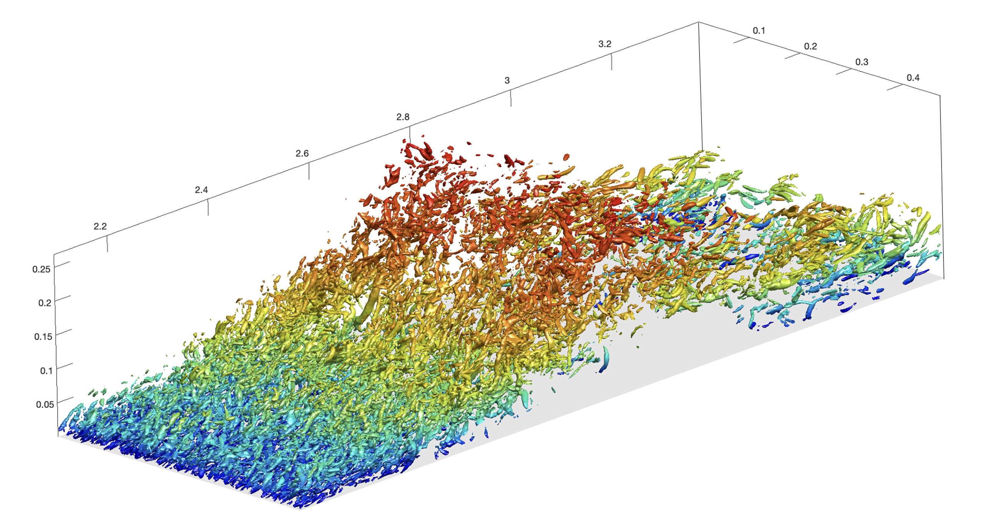
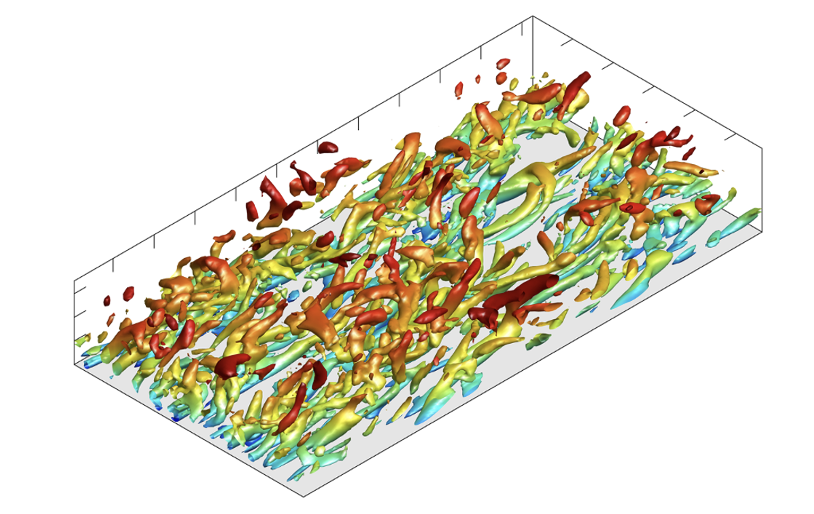
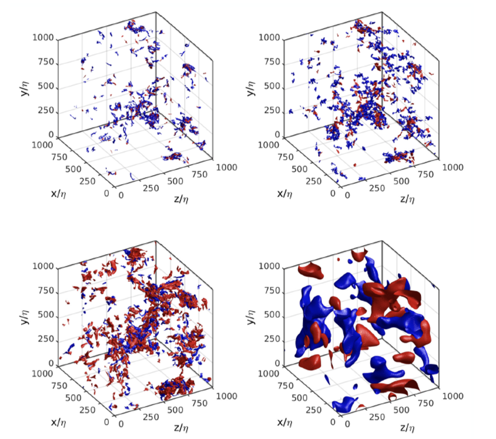
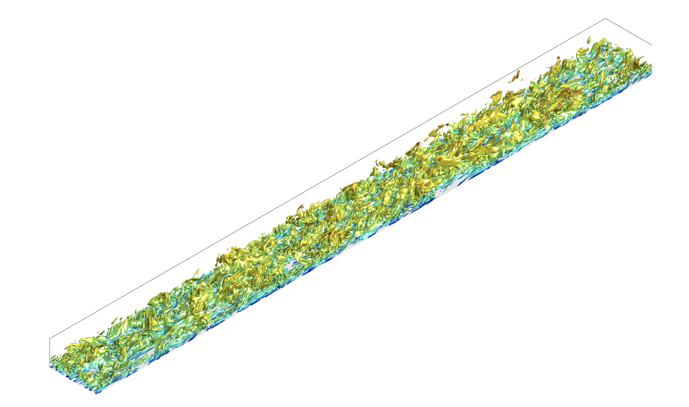

Introduction
My research mainly involves scientific computing, especially computational fluid dynamics (CFD). That is, I use high-performance computing (HPC) tools to simulate and understand the physics of complex, turbulent flows. My research has a wide range of impacts, in aerospace as well as naval applications. I am currently expanding my interests to machine-learning (ML) applications for HPC and scientific simulations.
At Stanford, I work with Prof. Ali Mani to develop new tools for analyzing/understanding complex flow systems and improving models for more effective simulations.
I also work with Prof. Adrian Lozano Duran at MIT, analyzing the underlying structures and energy cascades in turbulent flows using novel data analysis algorithms.
For my undergrad, I got a B.S.E. in Naval and Ocean Engineering. I worked with Prof. Shin Hyung Rhee on multi-phase flows and CFD, particularly for naval applications.
See below for some of my (beautiful) simulation images. These involve over 10TB of CFD data, simulated using over 200,000 CPU hours.
- Separated wall-bounded turbulent flow:

- Turbulent channel flow:

- Cascade of homogenous turbulence:

- Turbulent boundary layer flow:
